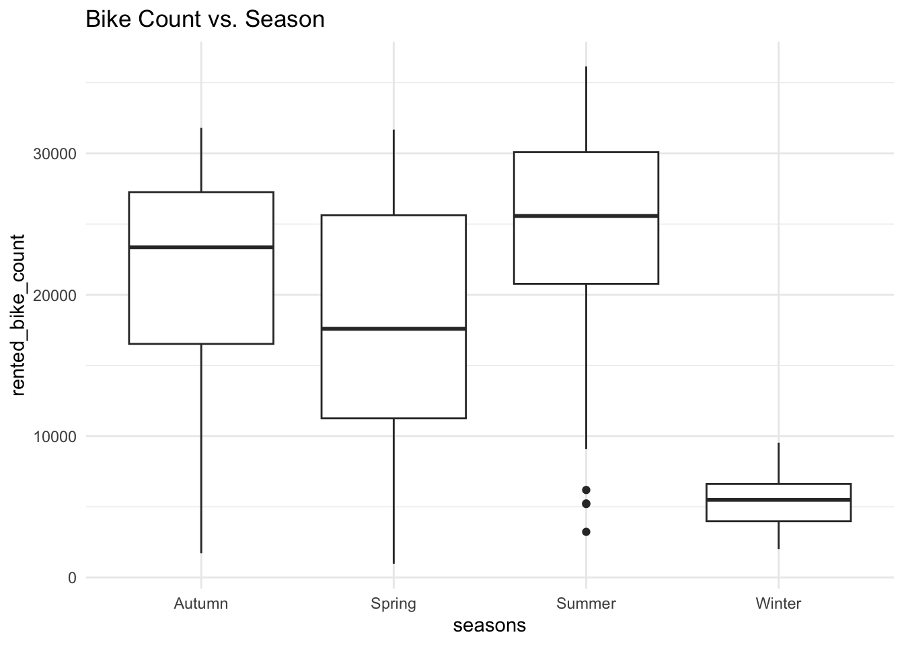
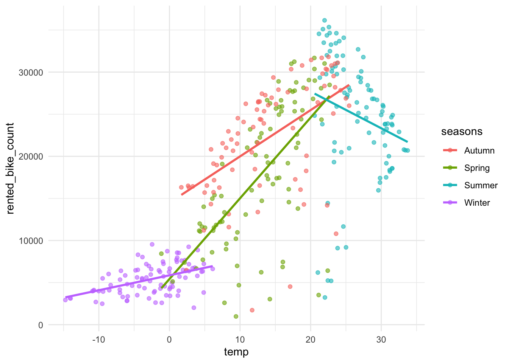
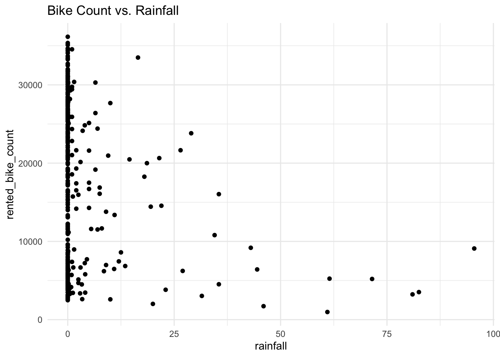
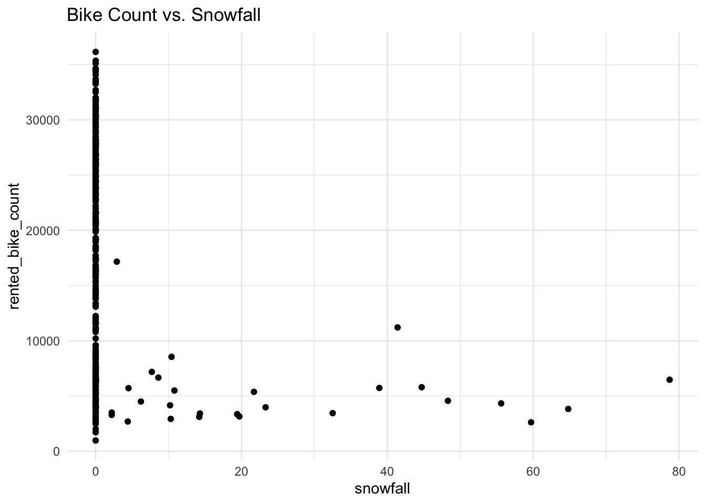

Rows: 8760 Columns: 14
── Column specification ────────────────────────────────────────────────────────
Delimiter: ","
chr (4): Date, Seasons, Holiday, Functioning Day
dbl (10): Rented Bike Count, Hour, Temperature(°C), Humidity(%), Wind speed ...
ℹ Use `spec()` to retrieve the full column specification for this data.
ℹ Specify the column types or set `show_col_types = FALSE` to quiet this message.
EDA
Lets first check for any missing values in the dataset:
colSums(is.na(bike_data))
Date Rented Bike Count Hour
0 0 0
Temperature(°C) Humidity(%) Wind speed (m/s)
0 0 0
Visibility (10m) Dew point temperature(°C) Solar Radiation (MJ/m2)
0 0 0
Rainfall(mm) Snowfall (cm) Seasons
0 0 0
Holiday Functioning Day
0 0
There are no missing values in the dataset. Great!
Next, we’ll examined the structure of the dataset to verify that each variable had the correct data type. We’ll also review summary statistics for the numeric variables and the unique values of the categorical variables to identify any unusual or unexpected values.
glimpse() will tell us whether each variable is numeric, character, date, etc.
summary() will report the minimum, quartiles, median, mean, and maximum for numeric variables.
summary(bike_data |>select(where(is.numeric))) # only run on numeric vars
Rented Bike Count Hour Temperature(°C) Humidity(%)
Min. : 0.0 Min. : 0.00 Min. :-17.80 Min. : 0.00
1st Qu.: 191.0 1st Qu.: 5.75 1st Qu.: 3.50 1st Qu.:42.00
Median : 504.5 Median :11.50 Median : 13.70 Median :57.00
Mean : 704.6 Mean :11.50 Mean : 12.88 Mean :58.23
3rd Qu.:1065.2 3rd Qu.:17.25 3rd Qu.: 22.50 3rd Qu.:74.00
Max. :3556.0 Max. :23.00 Max. : 39.40 Max. :98.00
Wind speed (m/s) Visibility (10m) Dew point temperature(°C)
Min. :0.000 Min. : 27 Min. :-30.600
1st Qu.:0.900 1st Qu.: 940 1st Qu.: -4.700
Median :1.500 Median :1698 Median : 5.100
Mean :1.725 Mean :1437 Mean : 4.074
3rd Qu.:2.300 3rd Qu.:2000 3rd Qu.: 14.800
Max. :7.400 Max. :2000 Max. : 27.200
Solar Radiation (MJ/m2) Rainfall(mm) Snowfall (cm)
Min. :0.0000 Min. : 0.0000 Min. :0.00000
1st Qu.:0.0000 1st Qu.: 0.0000 1st Qu.:0.00000
Median :0.0100 Median : 0.0000 Median :0.00000
Mean :0.5691 Mean : 0.1487 Mean :0.07507
3rd Qu.:0.9300 3rd Qu.: 0.0000 3rd Qu.:0.00000
Max. :3.5200 Max. :35.0000 Max. :8.80000
Now let’s check for the unique values of the categorical variables:
# A tibble: 2 × 7
functioning_day n mean median sd min max
<fct> <int> <dbl> <dbl> <dbl> <dbl> <dbl>
1 No 295 0 0 0 0 0
2 Yes 8465 729. 542 642. 2 3556
One thing immediately stands out. On days where functioning_day is "No", there are no bike rentals at all. This makes sense because the bike rental system was not operating on those days. Since these observations don’t represent normal bike rental activity, we’ll remove them before fitting our predictive models.
Now we’ll simplify the dataset by summarizing across the hours so that each day has a single observation. We’ll group by date, seasons, and holiday, then compute the total bike rentals, rainfall, and snowfall for each day. For the remaining weather variables, we’ll compute the daily average.
# A tibble: 2 × 5
holiday n mean median sd
<fct> <int> <dbl> <dbl> <dbl>
1 Holiday 17 12700. 7184 10504.
2 No Holiday 336 17727. 19104. 9862.
Now let’s explore some relationships between our variables with a few plots.
Bike rentals appear to vary across the seasons.
ggplot(bike_data,aes(x = seasons, y = rented_bike_count)) +geom_boxplot() +theme_minimal() +labs(title ="Bike Count vs. Season")

Bike rentals also appear to increase as the average daily temperature increases. When we take a closer look, we can see this relationship acts inversely during summertime. This could be because temperatures are extremely high during the summer, and as it gets hotter, people tend to stay inside to stay cool.
ggplot(bike_data,aes(x = temp, y = rented_bike_count, color = seasons)) +geom_point(alpha =0.6) +theme_minimal() +geom_smooth(method ="lm", se =FALSE)
`geom_smooth()` using formula = 'y ~ x'

As we would have expected, bike rentals seem to decrease as rainfall increases. This is also true when snowfall increases.
ggplot(bike_data, aes(x = rainfall, y = rented_bike_count)) +geom_point() +theme_minimal() +labs(title ="Bike Count vs. Rainfall")

ggplot(bike_data, aes(x = snowfall, y = rented_bike_count)) +geom_point() +theme_minimal() +labs(title ="Bike Count vs. Snowfall")

Finally, let’s examine the relationships between our numeric variables by computing their correlation matrix.
Next, we’ll split the data into training and test sets. We’ll use a 75/25 split and stratify on the seasons variable so that each season is represented in approximately the same proportion in both datasets. The training set will be used to fit our models, while the test set will be reserved for evaluating model performance.
set.seed(123) # set seed for reproducibilitybike_split <-initial_split(bike_data, prop =0.75, strata = seasons)bike_train <-training(bike_split)bike_test <-testing(bike_split)
Now we’ll create a 10-fold cross-validation split using the training data. This will allow us to estimate model performance by repeatedly training the model on nine folds and validating it on the remaining fold. Each observation in the training set is used for validation exactly once.
For our first multiple linear regression model, we’ll create a recipe to preprocess the data. We won’t use the date variable directly as a predictor, but we’ll use it to create a new day_type variable that indicates whether each observation occurred on a weekday or weekend. After creating this variable, we’ll remove the temporary day-of-week variable. We’ll also standardize the numeric predictors so that they’re all on a comparable scale, and we’ll create dummy variables for the categorical predictors (seasons, holiday, and day_type) so they can be used in the regression model.
For our second multiple linear regression model, we’ll use the same preprocessing steps as before. In addition, we’ll include several interaction terms to allow the effect of one predictor to depend on another. Specifically, we’ll add interactions between seasons and holiday, seasons and temp, and temp and rainfall.
For our third multiple linear regression model, we’ll use the same preprocessing steps and interaction terms as in the second recipe. In addition, we’ll include quadratic terms for each numeric predictor to allow the model to capture nonlinear relationships between the weather variables and bike rentals.
Now that we’ve created our preprocessing recipes, we’ll define a multiple linear regression model using the "lm" engine. We’ll then combine the model with each recipe in a workflow and evaluate each model using 10-fold cross-validation on the training set. We’ll compare the cross-validation results to determine which model performs best.
# define the modelbike_lm <-linear_reg() |>set_engine("lm")
# fit the modelsset.seed(123) # set seed for reproducibilitybike_fit1 <-fit_resamples( bike_wf1,resamples = bike_folds )bike_fit2 <-fit_resamples( bike_wf2,resamples = bike_folds )
→ A | warning: prediction from rank-deficient fit; consider predict(., rankdeficient="NA")
→ A | warning: prediction from rank-deficient fit; consider predict(., rankdeficient="NA")
There were issues with some computations A: x8
There were issues with some computations A: x10
# compare the modelscollect_metrics(bike_fit1)
# A tibble: 2 × 6
.metric .estimator mean n std_err .config
<chr> <chr> <dbl> <int> <dbl> <chr>
1 rmse standard 4151. 10 150. pre0_mod0_post0
2 rsq standard 0.825 10 0.0138 pre0_mod0_post0
collect_metrics(bike_fit2)
# A tibble: 2 × 6
.metric .estimator mean n std_err .config
<chr> <chr> <dbl> <int> <dbl> <chr>
1 rmse standard 3460. 10 475. pre0_mod0_post0
2 rsq standard 0.876 10 0.0326 pre0_mod0_post0
collect_metrics(bike_fit3)
# A tibble: 2 × 6
.metric .estimator mean n std_err .config
<chr> <chr> <dbl> <int> <dbl> <chr>
1 rmse standard 3424. 10 593. pre0_mod0_post0
2 rsq standard 0.879 10 0.0388 pre0_mod0_post0
Based on these results, bike_fit3 is our best-performing model with an RMSE of 3423.85. It also yields the highest \(R^2\) value of 0.88.
Since the third recipe produced the best cross-validation performance, we’ll fit this model to the entire training dataset and evaluate its performance on the test dataset. We’ll then examine the RMSE on the test set and extract the estimated regression coefficients from the final fitted model.
# fit the final modelbike_final_fit <-last_fit( bike_wf3,split = bike_split )
→ A | warning: prediction from rank-deficient fit; consider predict(., rankdeficient="NA")
# compute the test RMSEcollect_metrics(bike_final_fit)
# A tibble: 2 × 4
.metric .estimator .estimate .config
<chr> <chr> <dbl> <chr>
1 rmse standard 2961. pre0_mod0_post0
2 rsq standard 0.917 pre0_mod0_post0
# extract the coefficient tablebike_final_fit |>extract_fit_parsnip() |>tidy()